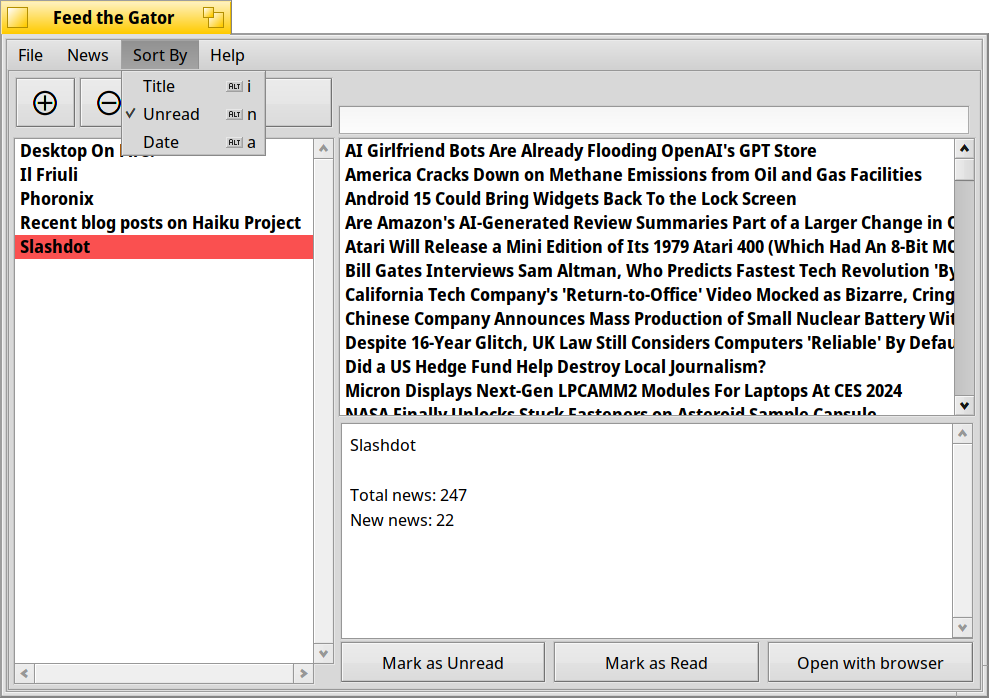

Topics
|
How to sort the news
if you have a lot of news maybe you can find useful the "Sort By"
menu. There you'll find three ways of sorting the news list:

- Date: the news are ordered by pubishing date/time, if there's no publishing date/time information available upstream, filesystem date/time will be used
- Title: the alphabetical order
- Unread: sort first the unread news then the read ones
|